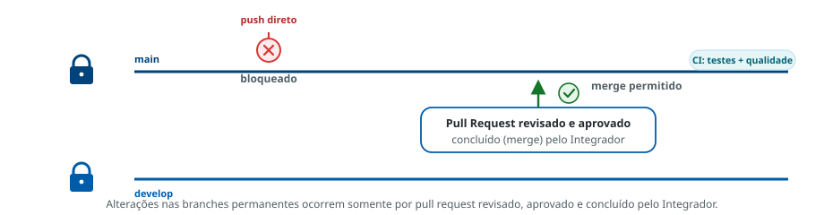

7
Prática Desejada
As branches permanentes devem ser protegidas
Regra
As branches permanentes (develop e main) devem
apresentar políticas de segurança e controle aplicadas, de modo que alterações ocorram
somente por processos definidos e controlados — preservando a integridade do código.
O que a prática exige
- Bloqueio de push manual direto nas branches permanentes.
- Exigência de pull request revisado, aprovado por pares e concluído por integradores.
- Integração a pipelines automatizadas que executem testes, verificações de qualidade e validações de conformidade.
- Governança contínua pelos integradores: histórico de merges, rastreabilidade de tags e verificação do cumprimento das políticas.
Como a proteção atua
FiguraPush direto bloqueado · integração via PR

Referências metodológicas
Espaço reservado para os links institucionais sobre este assunto.